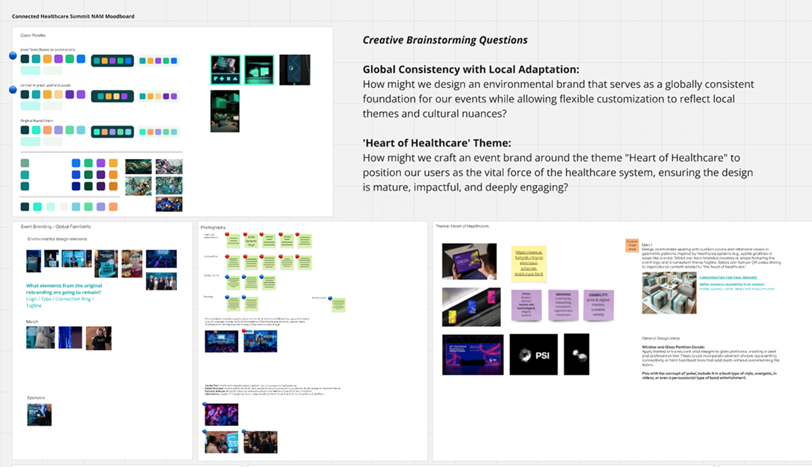
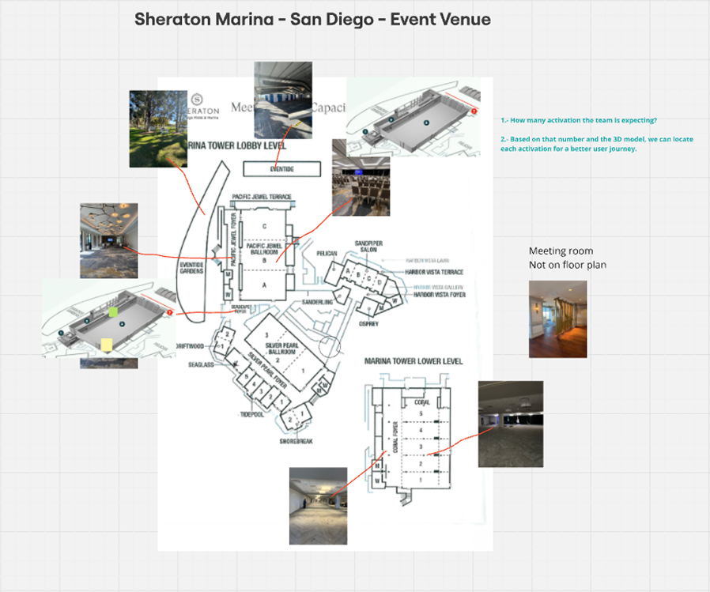

The brief
Two North American user conferences needed physical environments that helped attendees find their way, move between sessions, and engage with the event. Signage, temporary installations, and the keynote stage needed to work within each venue while carrying a consistent event identity.
As part of the core event team, I led physical and digital branding and coordinated the keynote stage’s audiovisual requirements. My role connected the approved creative direction with venue conditions, vendor requirements, and fixed installation deadlines.
Understanding the venue
I visited venues before the events and reviewed plans and dimensions to identify where signage, wayfinding, and temporary installations could work. I gathered venue rules, labour requirements, and approved-vendor information. Early discussions with venue and audiovisual partners helped define stage configurations and technical requirements before production began.
Working with marketing colleagues, internal designers, and external design partners, I helped translate the event theme into applications for the physical space. We used working boards to explore the visual direction and relate early ideas to venue layouts and site observations.


Turning concepts into production information
The environmental scope included wall graphics, floor-applied wayfinding, directories and maps, glazing treatments, photo backdrops, interactive walls, and stage branding. I built an asset catalogue that recorded each item’s quantity, dimensions, location, production requirements, and estimated cost. It supported budgeting and gave the team a reference for tracking each item through design, fabrication, and installation.
I coordinated the exchange of venue information and technical requirements among designers, fabricators, and suppliers. I reviewed vendor drawings and produced additional diagrams and technical drawings where an asset needed clearer dimensions or installation instructions. Before releasing work for production, I checked files and vendor proofs against the approved design.
Managing fabrication and delivery
I built budgets from asset requirements and vendor quotations, approved orders within my scope, and maintained production schedules in Asana and Excel. I tracked approvals, fabrication, delivery, and installation milestones across print, environmental graphics, staging, and audiovisual suppliers. When drawings or specifications needed revision, I coordinated the updates against the event schedule.
For the keynote stage, I worked with venue and audiovisual partners to coordinate how stage branding, screen visuals, and lighting colours would appear together.
Installation and close-out
During setup, I coordinated vendors and venue representatives, received physical assets, and checked that installations matched the approved locations, dimensions, and designs. I resolved placement and finish issues and accepted completed work within my scope before the events opened. After each event, I coordinated removal of temporary graphics and branding and reviewed the work at close-out.
Documenting the work for future events
I also developed an internal event services catalogue to help teams brief and plan future work. It documented available design services, estimated design timelines, and revision allowances. It also clarified how content readiness, team capacity, and changes to requirements affected design delivery, with fabrication and installation identified as separate stages.
Read International User Conferences for the broader event program.